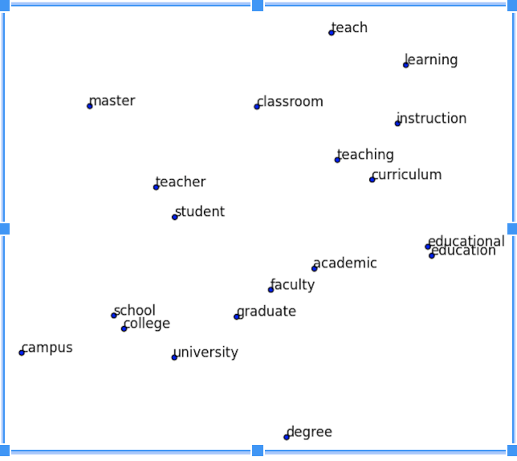
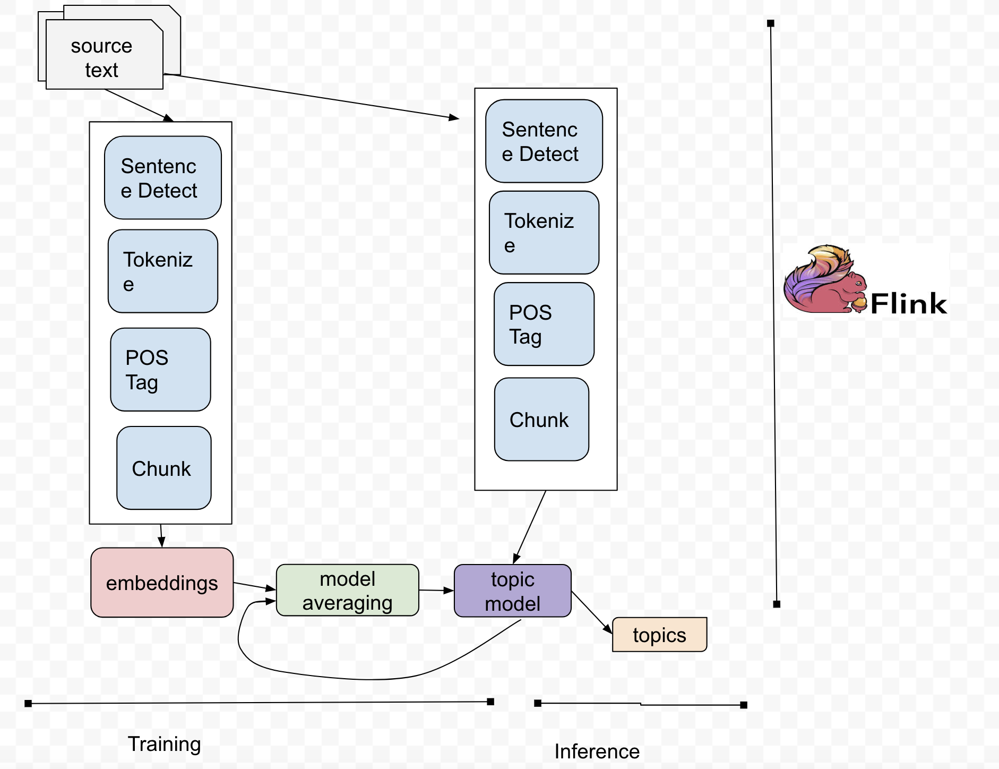
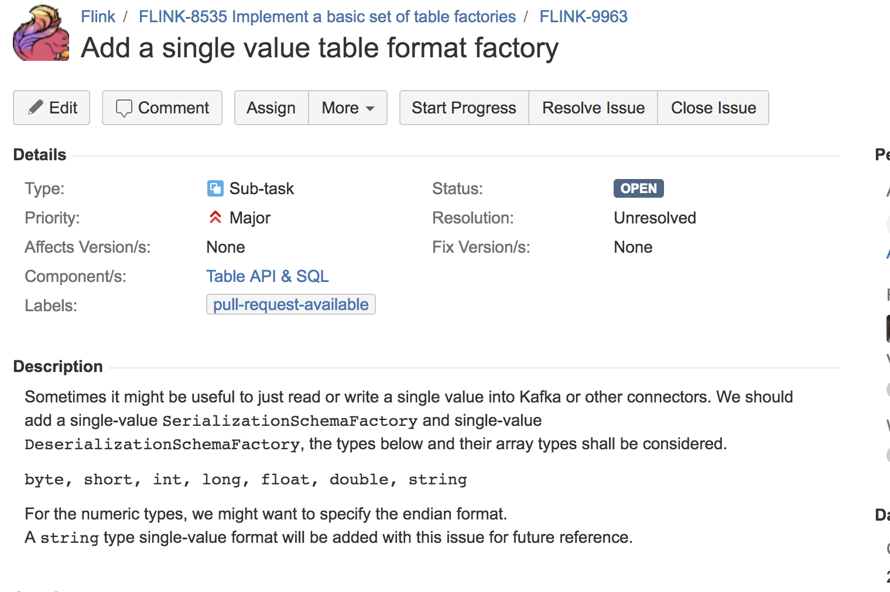
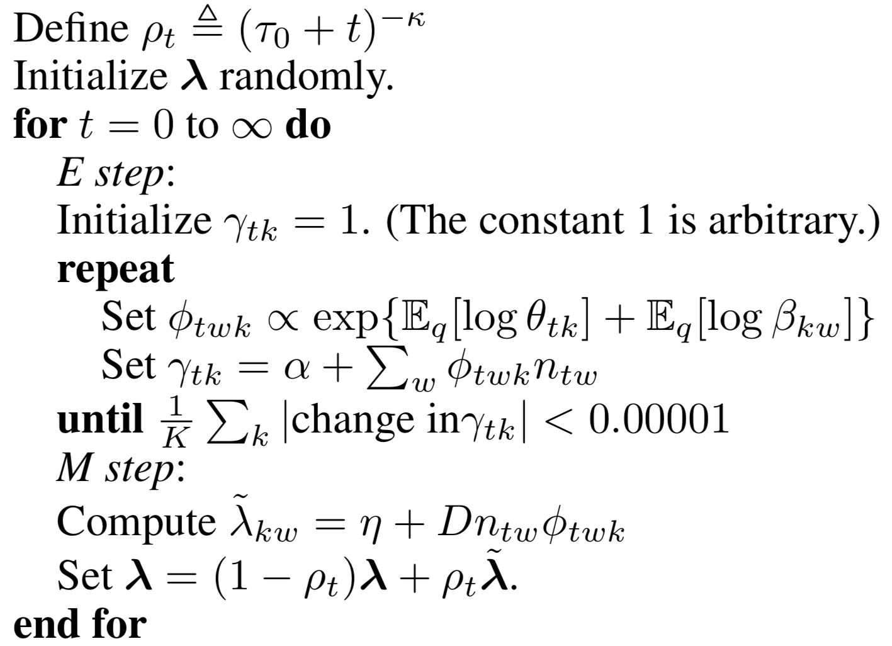

Streaming Topic Model Training and Inference
Suneel Marthi
Joey Frazee
September 5, 2018
Flink Forward, Berlin, Germany
$WhoAreWe
-
Joey Frazee
@jfrazee- Member of Apache Software Foundation
- Committer on Apache NiFi, and PMC on Apache Streams
-
Suneel Marthi
@suneelmarthi- Member of Apache Software Foundation
- Committer and PMC on Apache Mahout, Apache OpenNLP, Apache Streams
Agenda
- Motivation for Topic Modeling
- Existing Approaches for Topic Modeling
- Topic Modeling on Streams
Motivation for Topic Modeling
Topic Models
- Automatically discovering main topics in collections of documents
- Overall
- What are the main themes discussed on a mailing list or a discussion forum ?
- What are the most recurring topics discussed in research papers ?
Topic Models (Contd)
- Per Document
- What are the main topics discussed in a certain (single) newspaper article ?
- What is the most distinctive topic that makes a certain research article more interesting than the others ?
Uses of Topic Models
- Search Engines to organize text
- Annotating Documents according to these topics
- Uncovering hidden topical patterns across a document collection
Common Approaches to Topic Modeling
- Latent Dirichlet Allocation (LDA)
- Topics are composed by probability distributions over words
- Documents are composed by probability distributions over Topics
- Batch Oriented approach
LDA Model
 |
|
Intuition: Documents are a mixture of topics, topics are a mixture of words. So documents can be generated by drawing a sample of topics, and then drawing a sample of words. |
|
- Latent Semantic Analysis (LSA)
- SVDed TF-IDF Document-Term Matrix
- Batch Oriented approach
- Drawbacks of Traditional Topic Modeling Approach
- Problem : labelling topics is often a manual task
E.g. LDA topic:30% basket,15% ball,10% drunk,…
can be tagged as basketball
Common Approaches Deep Learning (of course)
- Learn to perform LDA: LDA supervised DNN training (inference speed up)
-
https://arxiv.org/abs/1508.01011
- Deep Belief Networks for Topic Modelling
- https://arxiv.org/abs/1501.04325
Embeddings for Topic Modeling
- LDA2Vec: Mixing LDA and word2vec word embeddings
-
https://arxiv.org/abs/1605.02019
- Navigating embeddings: geometric navigation in word and doc embeddings space looking for topic embedding

Static vs Dynamic Corpora
- Learning Topic Models over a fixed set of Documents
- Fetch the Corpus
- Train and Fit a topic model
- Extract topics
- ...other downstream tasks
Static vs Dynamic Corpora (Contd)
- What to do with Corpus updates?
- Document collections are not static in real world
- There may be no document collections to begin with
- Memory limits with large corpora
- Reprocess entire corpora when new documents are added
Static vs Dynamic Corpora (Contd)
- Streams, Streams, Streams
- Twitter stream
- Reddit posts
- Papers on ResearchGate and Arxiv
- ....
Questions for Audience
-
Who’s doing inference or scoring on streaming data?
- Who’s doing online learning and optimization on streaming data?
(2) is hard, sometimes because the algorithms aren’t there. But, also because people don’t know the algorithms are there.
Topic Modeling on Streams
2 Streaming Approaches
- Learning Topics from Jira Issues
- Online LDA
Learning Topics on Jira Issues
Workflow
What are Embeddings ?
Represent a document as a point in space), semantically similar docs are close together when plotted
Such a representation is learned via a (shallow) neural network algorithm
FLINK-9963: Add a single value table format factory
Topics extracted for Flink-9963
- format factory
- table schema
- table source
- sink factory
- table sink
FLINK-8286: Fix Flink-Yarn-Kerberos integration for FLIP-6

Topics extracted for Flink-8286
- yarn kerberos integration
- kerberos integrationa
- yarn kerberos
Bayesian Inference
Goal: Calculate the posterior distribution of a probabilistic model given data
- Gibbs sampling/MCMC: Repeatedly sample from conditional distribution(s) to approximate the posterior of the joint distribution;
typically a batch process
- Variational Bayes: Optimize the parameters of a function that approximates joint distribution
Variational Bayes
- Expectation Maximization-like optimization
- Faster and more accurate
- Can often be computed online (on windows over streams)
Online LDA (1/2)
- Variational Bayes for LDA
- Batch or online
- Iterate between optimizing per-word topics and per-document topics (“E” step) and topic-word distributions (“M” step)
- Default topic model optimization in Gensim, scikit-learn, Apache Spark MLlib -- not because it’s amenable to streaming per se, but more because it’s memory efficient and can be applied to large corpora.
Online LDA (2/2)
|  |
|
|
Goal: Optimize the topic-word dist. parameter lambda; it tells us what words belong to the topics. [Image source: Hoffman, Blei & Bach, 2010.] |
Job-global parameters can be tracked in a state store. Batch-local parameters can be discarded. |
Online LDA on Flink
|
Set job parameters globally with setGlobalJobParameters() on execution environment, or pass as arguments to operators |
|
Operator/task-internal and don't need to be accessible by other tasks |
|
|
Links
- Stream LDA: https://github.com/jessykate/streamLDA
- https://github.com/kzhai/InfVocLDA
- http://papers.nips.cc/paper/3902-online-learning-for-latentdirichlet-allocation
- Learning from LDA using Deep Neural Networks - https://arxiv.org/pdf/1508.01011.pdf
- Deep Belief Nets for Topic Modeling - https://arxiv.org/pdf/1501.04325.pdf
Links (contd)
- Topic Modeling on Jira issues: https://github.com/tteofili/jtm
- Online LDA
Credits
- Tommaso Teofili, Simone Tripodi (Adobe - Rome)
- Joern Kottmann, Bruno Kinoshita (Apache OpenNLP)
- Fabian Hueske (Apache Flink, Data Artisans)